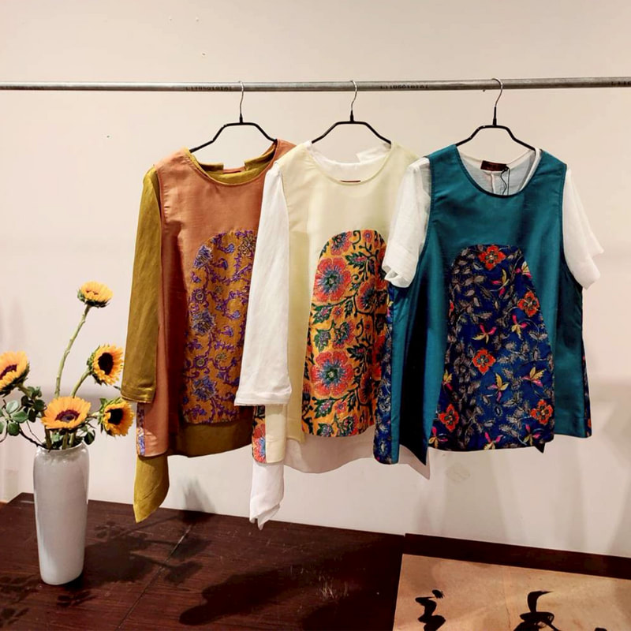

春稻系列服飾
一針一線 織就東方之美
春稻系列服飾以中國風為核心，融合傳統工藝與現代時尚設計，展現獨有的東方韻味與文化底蘊。每一款服飾皆由創辦人 陳春稻 親自設計，結合茶道、香道、花道等生活藝術，從布料選擇到剪裁細節，講究質感與舒適性，適合日常穿著，也適合各式藝文場合。
無論是雅緻的立領長衫、優美流暢的披肩外套，還是搭配飾品的整體造型，皆體現茶人優雅內斂的氣質。服飾設計兼具美學與實穿性，深受喜愛東方美學的群眾與專業茶人喜愛。
稻香系列服飾
稻香系列服飾以天然材料為核心，融合傳統工藝與現代時尚設計，在每一寸布料中，藏著田野的溫度。春稻風格服飾「稻香系列」嚴選天然布料與高級素材，結合質樸與優雅，將土地的氣息與自然的韻律，細緻編織進日常穿搭。溫柔不張揚的設計語彙，讓每一件衣著都成為與自然和諧共生的延伸。穿上稻香系列，穿上生活的寧靜與詩意。
